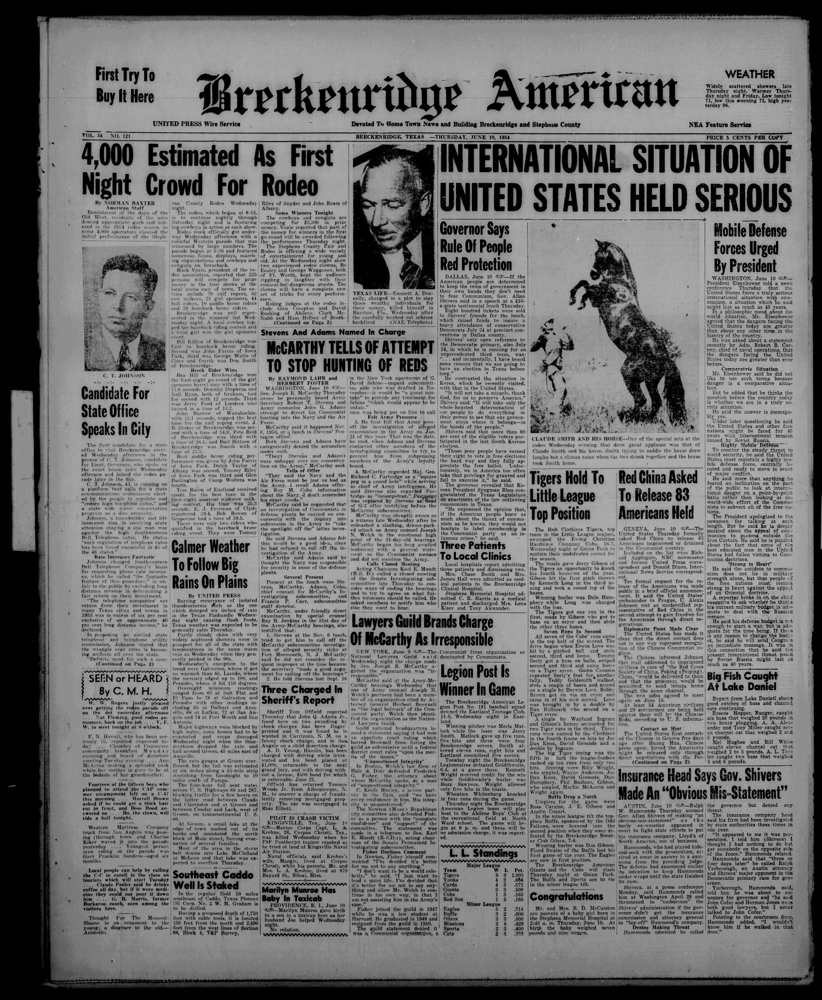
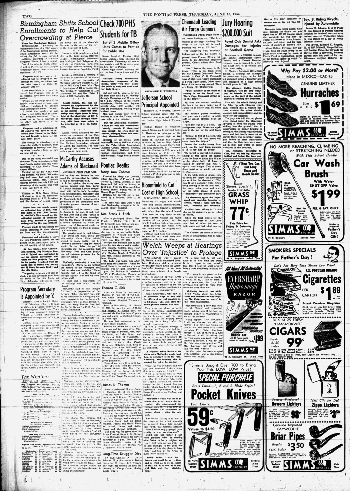
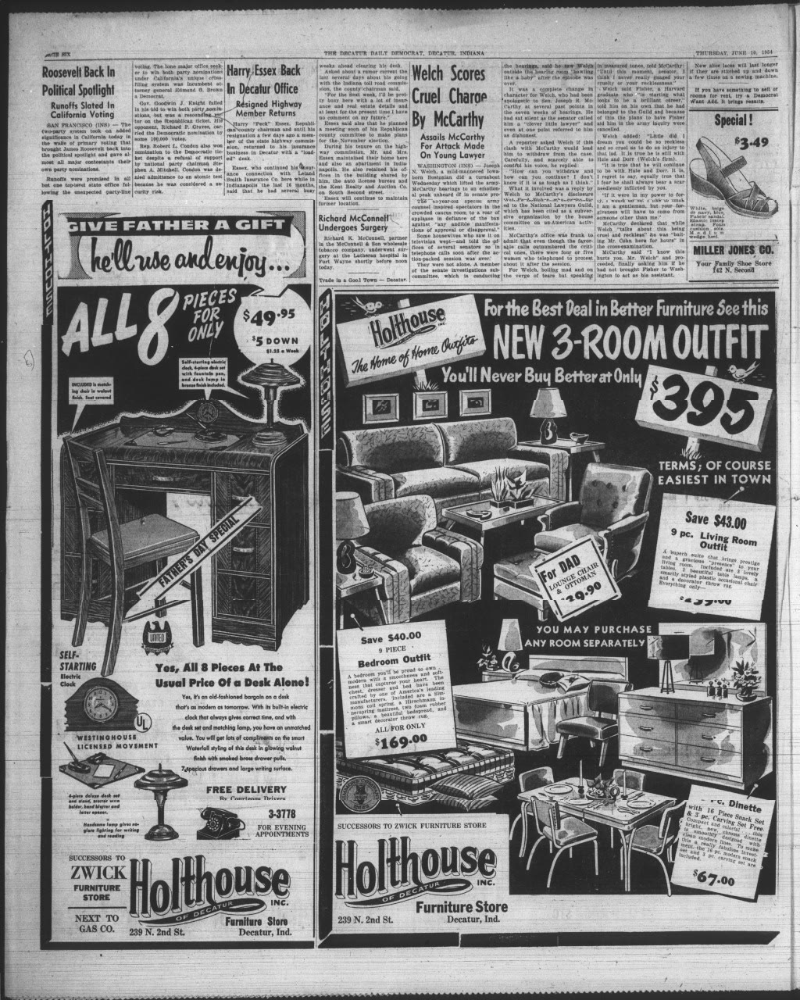

HN HN-600 · June 10, 1954 · Politics, Government & Diplomacy > Government Investigations & Abuse of Power > Oversight
Source: Decatur Daily Democrat, p. 6 — original page; U.S. Senate, Welch's rebuke.
Report: “Welch Scores Cruel Charge by McCarthy†recounted Army counsel Joseph N. Welch's June 9 objection to McCarthy's attack on a young lawyer, followed by applause despite hearing-room rules.
Assessment: The moment became a powerful televised public confrontation, but it did not immediately remove McCarthy from the Senate. His formal censure came in December 1954. The article documents public and legal reaction, not a judicial verdict against any individual named during the hearing.
Identity-review candidate peers: HN-598:Algorithmic
Authentic images retrieved from The Portal to Texas History (University of North Texas), Oakland University (The Pontiac Press) and Hoosier State Chronicles (Indiana State Library). Article crops are located using the archive's own OCR word coordinates and rendered at native crop resolution; article clips are assembled from the archive's own article-block images; page images marked "archive tiles" are stitched from the archive's own tiled page service at its 256-px tile cap; page images marked "issue PDF" are single pages rasterised from the archive's own issue PDF, with the page chosen by matching the headline against the PDF's text layer; page scans are reduced-size access renditions. No images were generated, mocked, or retouched.



Not yet acquired. Queued for provider-specific acquisition testing (see source-acquisition manifest).
URL (preserved verbatim): https://newspapers.library.in.gov/?a=d&d=DCDD19540610.1.6
Saved research report: Historical_Newspaper_Event_Research_578-602_2026-10-23.md
Evidence note: A newspaper report means a historical publication made a claim; it does not establish that claim as fact. Contemporary reporting is separated from later scholarly context and our own assessment.